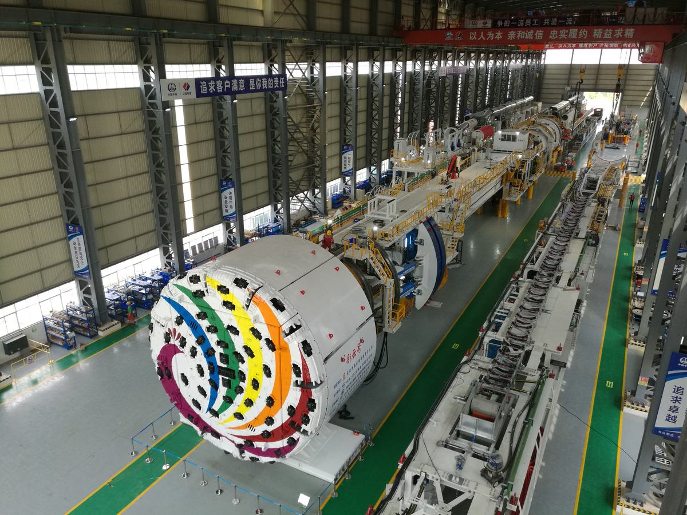
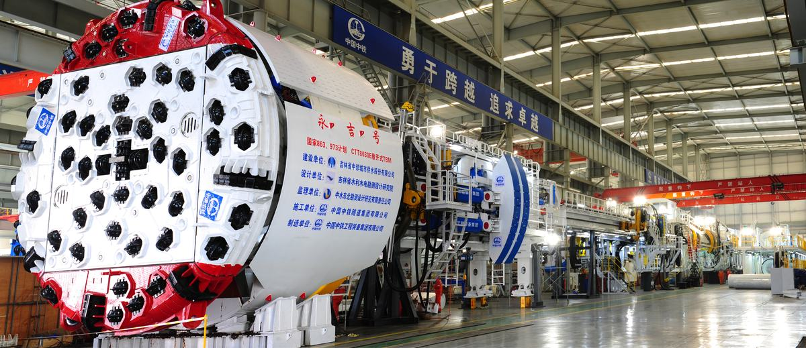
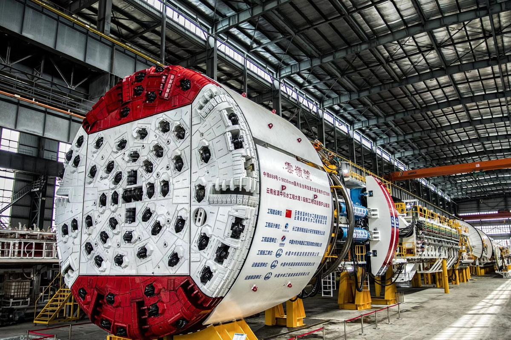

硬岩掘进机（TBM）广泛应用于交通、水利等重大工程领域，是代表国家装备制造业水平的大国重器。我国已成为全球TBM需求量最大、增长最快的国家，未来10年需求量占全球市场80%以上。立项初，我国TBM被国外垄断，单台售价高达3~5亿元，即使采用国外TBM，在“高效、安全、精准”方面存在诸多技术瓶颈，自主创新研制高性能TBM刻不容缓。
项目针对TBM施工中的“掘进难、预探难、辨识难”三大国际行业难题，围绕高效破岩、超前探测、精准感知三大核心技术，历经多年产学研用联合攻关，取得三项创新成果：
项目获得授权专利30项，制定国家标准3项，发表学术论文15篇，授权软件著作权2项，获河南省科技进步一等奖、河南省专利特等奖、中国机械工业科学技术奖一等奖等奖项。
中国机械工业联合会成果鉴定：“总体技术达到国际先进水平，其中刀盘刀具布置技术、超前聚焦测深型地质预报技术达到国际领先水平”。自主研制了国产首台8m级TBM“永吉号”、国产最大直径TBM“彩云号”等TBM，应用于高黎贡山、珠三角水资源项目、澳大利亚雪山等十多个国内外重大工程。打破了国外垄断，实现了我国TBM从“跟随”到“引领”的跃变。
随着我国隧道和地下工程建设的快速发展，以及《中国制造2025》、《国务院关于加快振兴装备制造业的若干意见》等一系列国家政策的出台，硬岩掘进机（TBM）已成为我国隧道开挖领域的优先选择和发展方向。相比于盾构机，硬岩掘进机则主要应用于高岩石强度，大埋深、长距离山岭隧道施工，岩石强度100MPa以上，埋深超过2000m，长距离独头掘进距离＞15km,行业公认穿山越岭的硬岩掘进机难度远大于盾构机。打破国外品牌垄断，攻克硬岩掘进机设计制造与施工的技术瓶颈、研发具有完全自主知识产权的硬岩掘进机，已经成为我国重大基础设施建设和高端装备制造业发展的战略需求。
大直径硬岩掘进机设计制造与掘进中的三大关键核心难题尚未解决：1）掘进难：面对高岩石强度（单轴抗压强度200MPa以上）、高地应力（30MPa以上）、高磨蚀性（CAI≥4）等复杂岩体地质条件，刀盘刀具异常失效问题频发；2）预探难：前期勘察难以探明隧道沿线不良地质和灾害源，而TBM环境极端复杂，强电磁和强震动干扰极为严重，造成前方灾害源“无法探、探不到、探不准”；3）辨识难：TBM快速掘进相适应的岩体信息原位动态获取方法尚不成熟，TBM参数调整“无据可依、仅凭经验、盲目应对”。
项目围绕TBM设计制造与施工中“掘进难、预探难、辨识难”三大国际行业难题，以高性能TBM刀盘刀具长距离抗损止裂设计技术、复杂环境下前方灾害源定位定量探测技术、基于多源大数据和多元算法共融互馈的围岩识别感知三项技术为核心，通过多项关键技术突破，实现了TBM自主设计制造与产业化生产应用。
主要创新点一：发明了高性能TBM刀盘刀具长距离抗损止裂设计技术，实现了适应恶劣工况条件下刀盘刀具的高效、长寿命设计制造。
【技术难点】影响滚刀性能的因素具有多样性、多重性、岩机关联性等特点，很难从单方面考核刀圈性能与岩性的匹配合理性，提高刀圈耐磨性的同时需兼顾刀圈抗强冲击性能；刀盘服役环境恶劣，刀群布置难以兼顾破岩效率、盘体结构、振动等多因素耦合关系，极端环境下刀盘系统的损伤机理难以预测。
【研究成果】首次基于微观磨损机理，建立了岩性-掘进参数-刀圈磨损的计算模型，开发了新刀圈材料和耐磨增韧制造工艺。相近岩性下，相比国际同类刀圈平均寿命提升1.2 倍。发明了刀群随机型/米字型协同进化布置设计方法，提出了基于裂纹扩展机理的刀盘抗损止裂设计准则，实现了刀盘17.5km无裂纹掘进。
1）创建了刀圈性能-多岩性参数映射函数模型。基于刀圈微观切削磨损模型和裂纹扩展磨损模型，联合掘进参数、岩性数据建立了刀圈磨损计算模型，形成了刀具地质适应性评估和消耗预测体系。
2）开发了耐磨增韧刀圈材料。基于平衡碳原则，完成刀圈材料化学成分设计。利用喷射成形快速非平衡凝固技术，消除粗大共晶碳化物，弥散析出初生碳化物作为稳定耐磨相；采用深冷处理，消除非稳定残余奥氏体，进一步提高耐磨性和尺寸稳定性，满足高磨蚀性岩体的掘进需求，提高滚刀的寿命和稳定性，实现了多种刀圈材料的地质适应性匹配设计。
3）发明了滚刀群与盘体结构耦合布置设计方法。综合考虑了顺次破岩、力学、振动、结构、装配等多种复杂性能要求和约束条件，深入分析了布置方案与盘体结构强/刚度之间的耦合关系，构建了以破岩效率为目标的滚刀群与盘体结构耦合布置设计模型，发明了滚刀群与盘体结构耦合布置设计方法。
4）提出了基于裂纹扩展机理的刀盘止裂设计准则。提出了基于应力应变变换的多向裂纹扩展模型，形成了基于裂纹的TBM刀盘盘体结构抗损设计方法。首次实现了TBM刀盘盘体薄弱部位定量化寿命预测，避免了传统的整体比例缩放刀盘盘体结构尺寸来提高寿命的无目的性。
主要创新点二：构建了适用于TBM复杂环境的集成化综合探测技术体系，实现了TBM复杂环境不良地质体高精度成像与准确感知，做到了致灾构造全部探明。
【技术难点】TBM环境极端复杂，掘进中电磁干扰和机械振动干扰极为强烈，造成前方灾害源“无法探、探不到、探不准”。其原因在于TBM复杂环境下多地球物理场响应认知不清，强干扰环境下灾害源识别理论与高精度探测方法一直未能取得实质性进展，尚属国内外理论技术空白。
【研究成果】提出了基于自动激发的超前定位定量探测方法，研制了与TBM自动化集成的搭载装置，融入中长距离地质分析技术，构建了适用于TBM复杂环境的集成化综合探测技术体系，率先解决了TBM复杂施工环境不良地质体高精度成像与准确预探的国际难题。
1） 针对断层破碎带等不良地质体定位成像难题，建立了TBM搭载的自动化激发的超前探测方法与技术。揭示了TBM隧道复杂环境下地震波场传播特征，提出了“前收后源”型空间观测方式，针对地震波偏移成像中纵横波相互串扰难题，基于纵横波视速度差异，研究并发展了解耦波动方程纵横波场分离方法，实现了适用于TBM复杂环境的不良地质偏移成像方法。研发了TBM搭载地震波探测的集成搭载装置、震源控制系统与自动激震系统，形成了TBM搭载的自动化地震超前探测方法与技术，率先破解了TBM复杂环境下不良地质准确定位成像的公认难题。
2）以TBM掘进面前方异常体三维精细化探测为目标导向，提出了一种基于逆时偏移的跨孔雷达三维精细化探测方法与技术。
提出了适用于TBM环境的钻孔电磁波探测思想及其实现方法，建立了TBM掌子面前方前向钻孔电磁波精细探测模式，突破了边界波场储存与逆时波场重构策略，提出了适用于钻孔电磁波探测的逆时偏移成像方法，开发形成了钻孔电磁波探测专用软件。研发了TBM搭载的多功能钻孔系统、孔中发射-接收天线的快速递送装置，形成了TBM搭载的钻孔电磁波探测系统，实现了TBM掘进面前方不良地质和岩体结构的精细化成像。
3）融入中长距离地质分析技术，构建了适用于TBM复杂环境的集成化综合探测技术体系。
以基于“前收后源”型空间观测的主动源地震探测方法、跨孔雷达三维精细化探测方法为核心，构建了一套“远距离大范围发现-中距离地质分析-近距离靶向精细识别”相结合的TBM施工前方不良地质集成的综合探测技术体系，实现了TBM施工不良地质的高精度成像与临灾判识，在实际工程中做到了致灾构造全部探明，保障TBM安全高效掘进。
主要创新点三：建立了基于大数据和多元算法共融互馈的围岩状态感知模型，实现了TBM掌子面在掘岩体力学参数的精确实时感知，为TBM安全高效掘进提供了科学决策依据,避免了TBM卡机、塌方等潜在施工风险。
【技术难点】（1）TBM施工数据具有实时、多源异构等特点，常规数据库技术和计算平台已无法适应TBM集群施工所产生的多源海量数据存储、管理和计算功能；（2）依靠钻孔取芯和地质素描等传统手段很难快速及时地获取与设备参数等量齐观的岩体力学信息；（3）TBM操作控制过于依赖人工经验，岩体信息感知则依赖于停机观察和地质推断，TBM操作手不仅难以实现安全合理控制，严重时甚至导致TBM卡机、塌方等事故发生。
【研究成果】开发了国际首个多源大数据融合的TBM云平台；发明了锚杆钻机随钻监测和渣片图像智能识别系统；建立了基于多源大数据和多元算法共融互馈的围岩状态感知模型，实现了掌子面在掘岩体力学参数精确实时感知,为TBM安全高效掘进提供了科学决策依据，解决了“辨识难”的国际难题。
1）开发了TBM多源大数据仓库及综合信息云计算平台。研发了基于ARM技术的TBM集群施工数据采集和智能传输物联盒，开发了基于Hadoop生态系统的MongoDB大数据仓库，突破了多源异构数据的实时连续存储以及大规模数据的读写分离技术。基于Openstack等开源技术开发了国际首个B/S架构的综合信息云计算平台，实现了TBM云前端信息采集、云网络数据传输、云平台数据管理分析、云终端信息利用决策的总体规划目标。
2）突破了岩体力学信息动态获取和量化表达技术。发明了锚杆钻机或超前地质钻机随钻监测系统和配套软件；基于钻进数据样本库建立了锚杆钻机钻进速度和岩体强度相关性模型，开发了基于深度学习算法的渣片图像边缘检测和分割智能算法，揭示了渣片粒径分布特征和岩体完整性特征相关规律，发明了渣片图像智能识别系统。
3）突破了基于多元算法融合的在掘岩体力学参数实时感知技术。基于大数据方法，揭示了TBM运行参数和岩体状态之间变化映射规律，得到了多元分步回归和智能算法岩机相互作用模型；建立了基于DS证据理论融合的围岩识别感知算法，实现了由掘进参数到掌子面岩体力学参数的实时精确反演感知。已应用于吉林引松工程，预测岩体强度和完整性准确率均＞84%。
【综上所述】该项目解决了“掘进难、预探难、辨识难”三大国际行业难题，形成了高性能TBM刀盘刀具长距离抗损止裂设计、复杂环境下前方灾害源定位定量探测技术、基于多源大数据和多元算法共融互馈的围岩识别感知技术三项核心创新技术。具备完全自主知识产权，总体技术达到国际先进水平，其中刀盘刀具布置技术、超前聚焦地质预报技术达到国际领先水平，集成化综合探测技术和TBM云平台为TBM施工智能化提供解决方案。国产掘进机实现市场占有率90%以上，实现了掘进机的产业化。此外，主参编了岩石隧道掘进机当前的3项国家标准，主导了TBM的发展方向，引领了产业集群的发展。



大直径全断面硬岩掘进机(TBM),打破国外 3-5 亿元单台垄断
重型掘进装备
交通/水利重大工程服务民生
未来 10 年全球需求 80% 在中国,市场巨大
「大国重器」装备力的代表